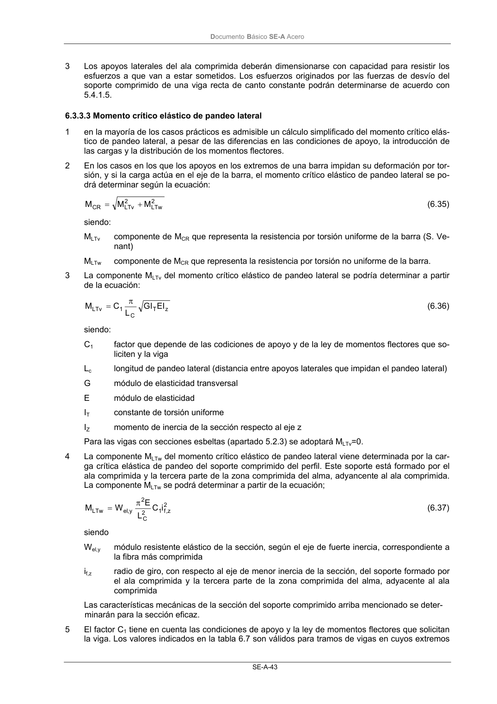

DB-SE-A · 6.3.3.3 Momento crítico elástico de pandeo lateral · versión 2007-10-23
SHA256: 9ed9ea694aabfbda3bfbbef40dfe9223fde05d13c35bc2ba9751e5a96a22a64f · página física 45 de 168 · métodos de encabezado
solo si están cotejados.
Formatos: Markdown · JSON de bloques · PDF p. 45 · imagen PNG
Documento Básico SE-A Acero SE-A-43 3 Los apoyos laterales del ala comprimida deberán dimensionarse con capacidad para resistir los esfuerzos a que van a estar sometidos. Los esfuerzos originados por las fuerzas de desvío del soporte comprimido de una viga recta de canto constante podrán determinarse de acuerdo con 5.4.1.5. 6.3.3.3 Momento crítico elástico de pandeo lateral 1 en la mayoría de los casos prácticos es admisible un cálculo simplificado del momento crítico elás- tico de pandeo lateral, a pesar de las diferencias en las condiciones de apoyo, la introducción de las cargas y la distribución de los momentos flectores. 2 En los casos en los que los apoyos en los extremos de una barra impidan su deformación por tor- sión, y si la carga actúa en el eje de la barra, el momento crítico elástico de pandeo lateral se po- drá determinar según la ecuación: 2 LTw 2 LTv CR M M M + = (6.35) siendo: MLTv componente de MCR que representa la resistencia por torsión uniforme de la barra (S. Ve- nant) MLTw componente de MCR que representa la resistencia por torsión no uniforme de la barra. 3 La componente MLTv del momento crítico elástico de pandeo lateral se podría determinar a partir de la ecuación: z T C 1 LTv EI GI L C M π = (6.36) siendo: C1 factor que depende de las codiciones de apoyo y de la ley de momentos flectores que so- liciten y la viga Lc longitud de pandeo lateral (distancia entre apoyos laterales que impidan el pandeo lateral) G módulo de elasticidad transversal E módulo de elasticidad IT constante de torsión uniforme IZ momento de inercia de la sección respecto al eje z Para las vigas con secciones esbeltas (apartado 5.2.3) se adoptará MLTv=0. 4 La componente MLTw del momento crítico elástico de pandeo lateral viene determinada por la car- ga crítica elástica de pandeo del soporte comprimido del perfil. Este soporte está formado por el ala comprimida y la tercera parte de la zona comprimida del alma, adyancente al ala comprimida. La componente MLTw se podrá determinar a partir de la ecuación; 2 z,f 1 2 C 2 y , el LTw i C L E W M π = (6.37) siendo Wel,y módulo resistente elástico de la sección, según el eje de fuerte inercia, correspondiente a la fibra más comprimida if,z radio de giro, con respecto al eje de menor inercia de la sección, del soporte formado por el ala comprimida y la tercera parte de la zona comprimida del alma, adyacente al ala comprimida Las características mecánicas de la sección del soporte comprimido arriba mencionado se deter- minarán para la sección eficaz. 5 El factor C1 tiene en cuenta las condiciones de apoyo y la ley de momentos flectores que solicitan la viga. Los valores indicados en la tabla 6.7 son válidos para tramos de vigas en cuyos extremos
